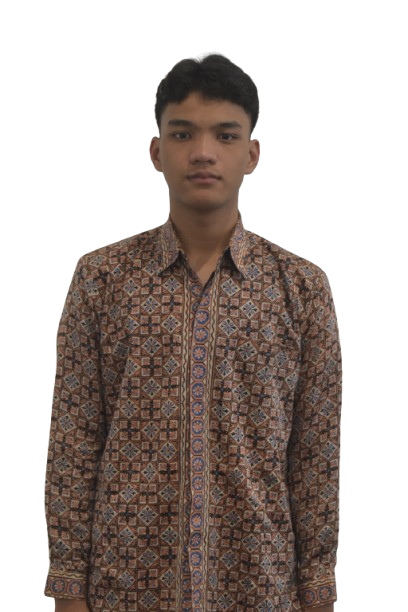

Welcome

00
Days00
Hours00
Minutes00
SecondJanuary 16 2024
Assalamu’alaikum Warahmatullahi Wabarakatuh
Dengan memohon rahmat Allah Subhanahu Wata’ala dan dengan segenap kerendahan hati, perkenankanlah kami mengundang Bapak/Ibu Saudara/i untuk hadir di acara pernikahan kami :
p
Akmal Husein Ramadhan
Dalam ingatanku, kau adalah bayangan yang tak pernah pudar. Ketika kita sering bertemu, tawa dan cerita mengisi hari-hari kita. Ada rasa bahagia yang menghangatkan hatiku saat melihatmu kembali. Kau tumbuh menjadi sosok yang cantik dan menarik, seperti bunga yang mekar di musim semi dengan pancaran indahnya.
Kau adalah orang pertama yang membuatku merasakan hal ini, sebuah rasa yang tak pernah kutemukan sebelumnya. Dari kejauhan, aku mengagumi dirimu. Menganggapmu seperti bintang di langit malam—sesuatu yang tak sanggup kugapai, tetapi selalu kuinginkan. Kecantikanmu terpancar dalam tutur kata dan penampilanmu. Setiap hal-ihwal dalam dirimu adalah harmoni yang sempurna. Aku juga menyukaimu, Aliva.
Kau adalah orang yang tepat untuk hatiku. Aku memilihmu, dan akan memilihmu lagi, lagi, dan lagi—tanpa henti, tanpa ragu, dalam sekejap waktu. Kau adalah tambatan hatiku, tempat aku berlabuh. Seperti ombak yang setia pada pantai. Biarkan cinta kita tumbuh seperti pohon yang kuat. Akar kita saling mengikat dalam keabadian. Dengan setiap langkah yang kita ambil bersama, janji ini akan abadi di antara kita
p
Aku telah mengenalmu sejak kecil, saat kedua orang tua kita bersahabat. Aku masih ingat dirimu dengan rambut ikal yang menawan dan lelucon lucu yang selalu menghangatkan hati. Saat itu, semuanya terasa sederhana dan menyenangkan. Dunia kita adalah taman bermain yang tak berujung.
Namun, takdir membawa kita terpisah. Jarak dan waktu menghapus jejak-jejak indah. Beberapa tahun berlalu, dan namamu kembali menggema, bak melodi yang tak pernah pudar dari ingatan. Kita dipertemukan oleh takdir yang sama. Jujur, hatiku berdebar saat melihatmu lagi. Rasa malu dan canggung menyelimuti pertemuan itu. Namun di dalam diriku, ada sesuatu yang mulai tumbuh; aku suka padamu, Husein.
Aliva Aslami Putri Medina
Dengan penuh harap, aku mengagumimu dari jauh. Setiap kali bertemu, detak jantungku bergetar. Firasatku berkata bahwa kau turut memperhatikanku. Kau juga menyukaiku, kan?
Oleh berbagai pertemuan yang tak terduga, akhirnya kita menjalin kisah yang indah. Aku adalah pasangan pertamamu dan itu membuatku merasa istimewa. Bagaikan bintang pertama yang muncul di langit malam. Dengan usia yang semakin matang, perjalanan kita menuju langkah yang lebih serius segera dimulai. Kita adalah dua insan yang dipersatukan oleh cinta. Rasanya seperti mimpi yang menjadi kenyataan—sebuah kisah abadi yang baru saja dimulai.
p
وَمِنْ اٰيٰتِهٖٓ اَنْ خَلَقَ لَكُمْ مِّنْ اَنْفُسِكُمْ اَزْوَاجًا لِّتَسْكُنُوْٓا اِلَيْهَا وَجَعَلَ بَيْنَكُمْ مَّوَدَّةً وَّرَحْمَةًۗ اِنَّ فِيْ ذٰلِكَ لَاٰيٰتٍ لِّقَوْمٍ يَّتَفَكَّرُوْنَ
“Di antara tanda-tanda (kebesaran)-Nya ialah bahwa Dia menciptakan pasangan-pasangan untukmu dari (jenis) dirimu sendiri agar kamu merasa tenteram kepadanya. Dia menjadikan di antaramu rasa cinta dan kasih sayang. Sesungguhnya pada yang demikian itu benar-benar terdapat tanda-tanda (kebesaran Allah) bagi kaum yang berpikir.”
– QS. Ar Rum (30): 21
p
p

p
“Karena hati tidak perlu memilih, ia selalu tahu ke mana harus berlabuh.”
– Perahu Kertas, Dee Lestari
p
p
Akad Nikah
13.00 - 13.30
Acara Resepsi
13.30 - Selesai